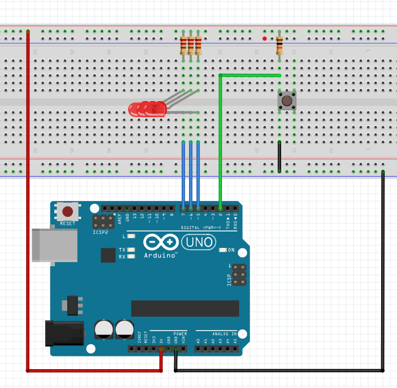
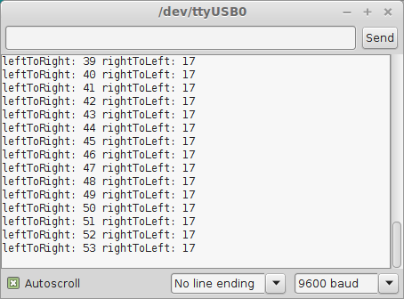
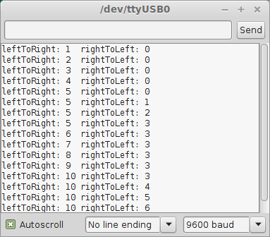

Part1:
Download our version of the Arduino IDE that supports Serial.printf and floating point printf.
Unzip it to a directory of your choosing. You may right click its launch icon and make a shortcut to your desktop if you wish. Launch the Arduino IDE by double clicking its icon.
Load last weeks Lab1 - Part3 code and verify it still compiles and loads on your arduino.
Part2:
Modify last weeks Lab1 – Part3 circuit to add a pushbutton to Digital pin 2. Your breadboard should now have 3 LEDs connected to your Uno on digital pins 7, 6, and 5 and a switch connected to digital pin 2. Make sure you use 220 ohm current limiting resistors for the LEDs and a 10k resistor for the pushbutton.

1) Make a lab2p1 project and write the code to turn on each LED in turn from left to right for 200mS only when the pusbutton is pressed, otherwise all LEDs should be off. This code should run forever. Only one light at a time should be on.
Use the pinMode, while, digitalRead, digitalWrite, and delay functions.
2) Make a lab2p2 project and write the code to turn on each LED in turn from left to right at a 200mS rate when the pusbutton is pressed and right to left when the push button is released.
Use the pinMode, while, digitalRead, digitalWrite, and delay functions.
3) Make a lab2p3 project and add to the lab2p2 code to print out the number of times you are going left -> right and right -> left on the serial monitor.

Use the pinMode, while, digitalRead, digitalWrite, printf, and delay functions.
4) Make a lab2p4 project. When the button is pressed, the LEDs are rotated from left to right 5 times and from right to left 3 times using 2 for loops. All LEDs should then be turned off until the next button press. The code should print out the number of times you are going left -> right and right -> left on the serial monitor.
Use the pinMode, while, for, digitalRead, digitalWrite, printf, and delay functions.

Submit your modified and appropriately commented programs to the dropbox Lab2 folder by the start of lab Week3. Be prepared to demo your code in Lab3.